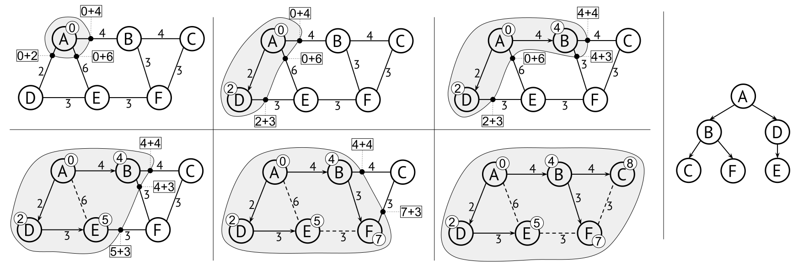

12.3 Shortest-path problems and Dijkstra’s algorithm
Breadth-first traversal using a queue lets us find the shortest paths through an unweighted graph, but if we want to do something like finding the fastest car route through a city we need to generalise to finding shortest paths in weighted graphs. Note that “shortest” doesn’t have to mean a distance in kilometers – if the weights denote travel times, then the problem will be to find the fastest route.
There are hundreds of other examples of shortest path problems that one might not even think of as graph in the first place. For example, finding the best move in a chess game, solving a puzzle, proving a mathematical theorem, or even deciding what to say in a conversation, can be formulated as shortest-path problems in some graph.
Formally, the shortest path between two vertices is a path whose total cost is as low as possible. This of course assumes that there is a path, and from here on we will assume that the path actually exists. Just as for BFS there may be several shortest paths – that is, different paths with the same total cost.
As we saw earlier, the generic graph traversal algorithm does not only find a path from one vertex to another, but from one vertex to all others. This is called the single-source shortest path problem. The solution is the shortest path tree (SPT).
Figure 12.5 shows two shortest path trees in an example graph. They show for example that A\rightarrow D\rightarrow E is a shortest path from A to E with a cost of 5, and that F\rightarrow E\rightarrow D is another from F to D. Neither of the trees help us figure out the shortest path from B to E, to do that we would need to construct an SPT for B.
12.3.1 Dijkstra’s shortest-path algorithm
Dijkstra’s algorithm is perhaps the most well-known graph algorithm of all – it solves the single source shortest path problem for weighted graphs. Note that the algorithm only work for graphs with non-negative weights. For most applications this is not a problem, for instance if the weights signify time or distance, there will not be any negative weights (unless we have a time machine).
The algorithm is an instance of the same generic traversal algorithm as in the previous section, where we keep an agenda of edges from visited to unvisited vertices. For DFS, the agenda is a stack. For BFS, the agenda is a queue. For Dijkstra’s algorithm, we use a min-priority queue, prioritised by the cost of the path formed from the starting vertex.
This requires a little extra book-keeping since the agenda does not simply contain edges, it contains edges with priority values. Figure 12.6 illustrates this. Note for example how in the second step the agenda contains two options for visiting E:
- Either directly from A at a cost of 6: this means that the agenda contains the edge A\rightarrow E with priority value 6.
- Or via the path A\rightarrow D\rightarrow E at a cost of 2+3=5: therefore the agenda contains the edge D\rightarrow E with priority value 5.
Note that in the second option, the priority value is different from the edge cost, because the priority is the total cost of the path from A, while the edge cost is just the final step.

To convince ourselves that Dijktra’s algorithm works, consider this: In the first step, it always selects the shortest edge (s,x) from the starting vertex s to some other vertex x (in our example, x=D). We know there is no shorter path from s to x, because any other path would start with a longer edge from s. The subsequent steps work similarly: We select the shortest path leading out of the set of visited vertices. Because any other path would start with a longer path from the set of visited vertices, we know that the path we use is a shortest path.
As with DFS and BFS before, we can also analyze the agenda at each step of the algorithm. Again, we assume that we only add edges that lead to unvisited vertices, and we only show the steps that pass the visitation check:
| edge | visited | agenda at end of iteration |
|---|---|---|
| (0, {\,?\,}\rightarrow A) | \{A\} | [(2, A\rightarrow D), (4, A\rightarrow B), (6, A\rightarrow E)] |
| (2, A\rightarrow D) | \{A,D\} | [(4, A\rightarrow B), (5, D\rightarrow E), (6, A\rightarrow E)] |
| (4, A\rightarrow B) | \{A,D,B\} | [(5, D\rightarrow E), (6, A\rightarrow E), (7, B\rightarrow F), (8, B\rightarrow C)] |
| (5, D\rightarrow E) | \{A,D,B,E\} | [(6, A\rightarrow E), (7, B\rightarrow F), (8, B\rightarrow C), (8, E\rightarrow F)] |
| (7, B\rightarrow F) | \{A,D,B,E,F\} | [(8, B\rightarrow C), (8, E\rightarrow F), (10, F\rightarrow C)] |
| (8, B\rightarrow C) | \{A,D,B,E,F,C\} | [(8, E\rightarrow F), (10, F\rightarrow C)] |
12.3.2 Extracting the shortest-path tree
Our generic graph traversal algorithm adds the traversed edges to a result set, and these edges together constitute a tree. For Dijkstra’s algorithm this is the shortest-path tree from the starting vertex.
However, a set of edges is not a very good data structure if we want to extract shortest paths from it. Is there a better way to store this SPT? A standard tree implementation where nodes point to their children does not support an efficient operation for adding a new edge, and it will not help us find the path to a specific node after we have finished the algorithm. Instead we want a tree where nodes point to their parent, a parent-pointer tree. We introduced them in Section 9.3, and they also fit very well for representing the SPT. A parent-pointer tree makes it easy to extend the tree with a new leaf by just attaching a new node to an existing node. Here is a simple datatype that works just fine:
datatype ParentTreeNode:
vertex: Vertex
parent: ParentTreeNodeThe downside with a parent-pointer tree is that we can only view it as a collection of paths back to the starting vertex. Fortunately, we are usually only interested in extracting the path to a specific vertex, and for this purpose a parent-pointer tree works perfectly.
12.3.3 Optimising Dijkstra’s algorithm
There are several optimisations to Dijkstra’s, involving keeping the agenda smaller. Consider when we visit F in the example in Figure 12.6. We have already found a path of cost 8 to C (A\rightarrow B\rightarrow C), yet we add an inferior path to the agenda (A\rightarrow B\rightarrow F\rightarrow C at cost 10). When we eventually process that path, it will be discarded by the visitation check. We could avoid this by replacing the visitation set by a map from vertices to costs, that efficiently gives us the best cost found so far for a vertex, and only add paths that improve the cost.
Here is an implementation in pseudocode of this optimisation, which also builds a parent-pointer tree. Note that we use a helper function that returns a default value of \infty for the visitation map.
dijkstra(start):
visited = new map from vertices to costs
result = new map from Vertex to ParentTreeNode
agenda = new min-priority queue ordered by total path cost
agenda.add(0, (null,start))
while agenda is not empty:
cost, (a,b) = agenda.removeMin() // 'cost' is the total cost from 'start' to b
if cost < getdefault(visited, b):
// Update the best cost for b, and point it to its parent in the SPT:
visited.put(b, cost)
result.put(b, new ParentTreeNode(b, result.get(a)))
for each (weight,b0,c) in outgoingEdges(b): // b0 is the same vertex as b
if cost + weight < getdefault(visited, c):
agenda.add(cost + weight, (b0,c))
return result
// If the vertex is not visited, we return the largest possible number (let's call it "infinity"):
getdefault(visited, a):
if a in visited: return visited.get(a), else return infinityGoing one step further, we can observe that there should never be two edges to the same vertex in the agenda. When we find a better option for reaching a vertex, we should replace the old entry in the agenda with the improved one. This means the agenda will never contain more than one edge to a particular vertex, and that every edge in the agenda leads to an unvisited vertex. To to do this we need to have a priority queue where we can update the priorities of existing elements. We briefly discussed updateable priority queues in Section 9.5.6, and leave as an exercise for the reader to implement Dijkstra’s algorithm using this idea.